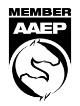
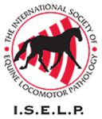
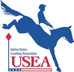
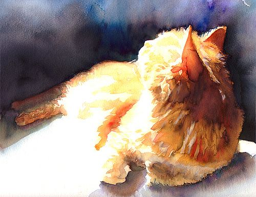
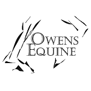

-

Digital Radiography Vetel generation II 2015 wireless series, 16 bit images! -

Ultrasonography GE LogicE ultrasound, tendon and convex probes. Ultrasonography of all musculoskeletal structures, including neck, back, and joints. -

PRP and IRAP Platelet Rich Plasma and IRAP are derived through processes of incubation, centrifugation and filtration of the horses own blood. They can be used to stimulate regeneration and decrease inflammation in joint and soft tissue injury. We also have other joint treatments available, including Prostride, polyacrylamide hydrogels, and standard steroid/HA injections. -

Stem cells Bone marrow is harvested from the horses' sternum through a wide needle, and sent off to a laboratory which will culture up a large batch of stem cells for injection. You can also have stem cells 'banked' indefinitely for later use in case of injury. -

Mesotherapy A very effective, minimally invasive treatment for back pain, consisting of intradermal injections to block pain signal transmission along the back and neck. -

Laser Therapy We have a class III low level laser therapy machine available for clients to rent and use in their own time, to assist in the healing of lacerations, soft tissue injuries and reduction of inflammation. -

Metron Hoof Balance Analysis Metron digital radiology software is capable of 3-D rendering of the hoof capsule. A collaborative appointment with your farrier can help perfect your horses shoeing and highlight potential hoof balance problems before they cause lameness. -

Dentals power float, macpherson gag, quiet patience! -

Prepurchase Exams A combination of the British Royal College of Veterinary Surgeons American Association of Equine Practitioners standards for pre-purchase exams. Variable rates depending on the intended use of the horse - includes full ridden exam with option for work at speed for performance horses, and extensive write up.
Preseason Exams Baseline heart, respiratory, and soundness. -

Event Vetting Experienced event vetting through FEI level - emergency equipment including fluids, Kimzey fracture splints, and surgical kit onsite. -

Nutrition Consults Some of the information frequently provided by Dr. Owens during nutrition consults, including the information NOT included on the bag! EG starch/simple sugar, cost per averaqe meal, and caloric content. -
Memberships - Royal College of Veterinary Surgeons
- American Association of Equine Practitioners
- American Veterinary Medical Association
- International Society of Equine Locomotor Pathology
- United States Equestrian Foundation
- Federation Equestre Internacional
- United States Eventing Association
- Washington State Veterinary Medical Association
 PRP 
Home euthanasia
We want the animals who have shared our lives to be comfortable at the end of their lives, and sometimes that means they would rather be at home. Dr Owens has a soft spot for geriatric pets, and is available to help with quality of life assessments and euthanasia. She has over 17 years of experience and is constantly updating her education in veterinary hospice and pain management.
Patients receive a professional and compassionate service, including quietly handling fractious or fearful animals of all species and alleviating the fears of family members. Dr Owens speaks fluent Spanish, is available for emergencies at any hour, and strives to keep costs fair and reasonable. A technician is available to accompany as needed.
Cremation services are also offered - either communal or private, (where the remains are returned to you). Pawprints are complimentary with cremations.
Costs vary depending on travel time and weight of the patient - please call or text for an estimate.

Photos
About
Specializing in equine orthopedics - Dr Owens is only taking new equine clients for orthopedic cases.
She is always happy to help with wildlife and small animal end of life home visits
-

I grew up in Issaquah and on Bainbridge Island, and my nephews are our family's fourth generation in Seattle. My family was heavily involved in Pony Club, Area VII Young Riders, and organizing events. I trained with Nancy Lowry and Jean Moyer through success at Intermediate level eventing. My top horse, Celebrity, had veterinary problems which prevented competition at Advanced before I had to leave for Brown University. Due to persistence, care, and faith, Celebrity eventually recuperated and later under his second owner Ingrid George, he competed Advanced for many years, then at the lower levels into his mid 20’s.
-

I left the Northwest to follow the family tradition of education in New England. I completed degrees at Brown University in premedical biology and postmodernist film production, and received my Doctor of Veterinary Medicine at Tufts University 2002. I completed equine externships with John Nolan and Kent Allen in Middleburg, VA, at CCI**** events pre-Sydney Olympics, at Palm Beach Equine Clinic at Palm Beach Polo Club, and in England and Argentina under some of the top vets in those nations. After graduation, I continued to work alongside FEI vets at international level competitions in jumping, dressage, eventing, and reining.
-

Under PJ McMahon at Kings Park in England, I was the official vet for most of the polo clubs outside London and cared for the horses of Pippa Funnel, Kyra Kyrtland, and many other Olympians. I spent 8 months in Argentina buying and training gaucho cowponies for professional polo.
-

On the other side of the spectrum, I was the equine vet for a mixed practice in rural agricultural Devon. I saw hunting horses, racehorses, and native moorland ponies, and helped to introduce therapies like stem cells, sterile maggot debridement, and IRAP to the area.
-

While in Devon, I was the vet for the local Dartmoor Zoological Park before and during a dramatic rehabilitation of the animals and facility. We were filmed by BBC who aired the footage as a prime time documentary, and park owner Ben Mees’ writings about those years became a best selling book and Hollywood movie, “We Bought A Zoo".
-

Between 1998 and 2005 I took intermittent time aside from sport horses to work on global animal health. I was director of Veterinarians for Global Solutions and on the board of directors for the Tibet/Nepal NGO "Drokpa" ('Nomad') for several years, and was invited by the Pan American Health Organization to spend a month at their office in Panama.
-

I worked for the African Union, with support from the African Wildlife Foundation and Ford Foundation, on wildlife/livestock disease interaction and veterinary infrastructure for nomadic people. While in South Africa, I spent 7 months as vet for the $85 million Warner Brothers movie Racing Stripes, caring for 11 zebras, 110 racehorses, and a posse of trained pelicans, sheep, etc. The African Union has published my book on veterinary pharmaceutical distribution models for underserved remote areas.
-

Establishing myself close to my roots in the Pacific Northwest has been a long time goal, and I am excited to provide a practical, personalized veterinary service with top level technology. If I can find the time, I enjoy attending three-day events, polo, flying small planes, editing the copious film footage I've collected on my travels, and following international health and politics.
Links
Veterinary
- FEI Drugs and Medications Rules - List of detection times
- USEF Drugs and Medications Guidelines
- American Association of Equine Practitioners, and thehorse.com
- CSU Orthopedic Research - Arthritis and other orthopedic disease
- Rutgers Equine Sciences - Great general horse topics
Nutrition and pasture management
- SAFER GRASS - Laminitis and low carb feed research
- BETH VALENTINE - Metabolic and muscle disorders, draft horses
- POISONOUS PLANTS
- RURAL HERITAGE
- WSU pasture and forages
- WSU pasture management
Farriery
- DR STEVE O'GRADY - Shoeing site
- PETE HEALEY - Alamo Pintado's farrier
- DR RICK REDDEN - Farrier/veterinarian
- MICHEL VALLIANT - A source for beautiful remedial shoes
Local equine and affiliates
- USEA AREA VII
- NW REGION PONY CLUB CALENDAR
- ADULT RIDERS area VII
- USEA
- USEF
- FEI, FEI Veterinary
- EQUESTRIANS INSTITUTE
- WASHINGTON STATE HORSE PARK
- AMERICAN HORSE COUNCIL - National equine policy
- FLYING CHANGES - Calendar of local events
- CHRONICLE OF THE HORSE
- HORSE AND HOUND
- NORTHWEST TREK